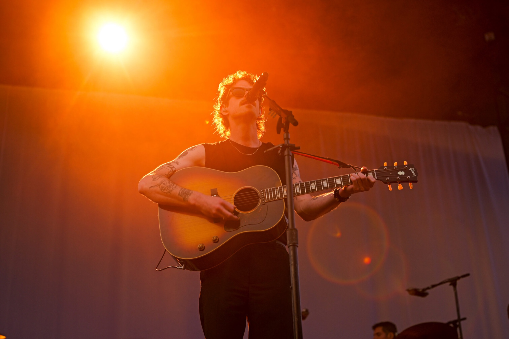
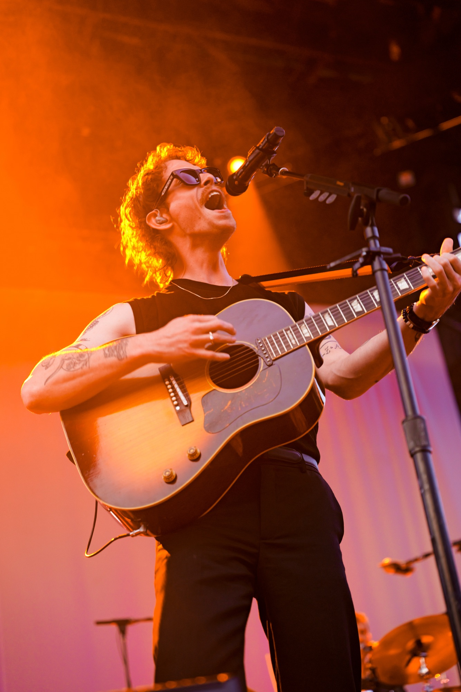
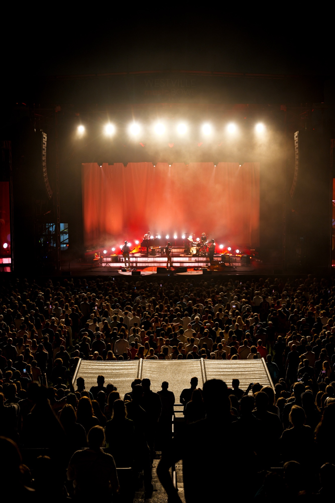
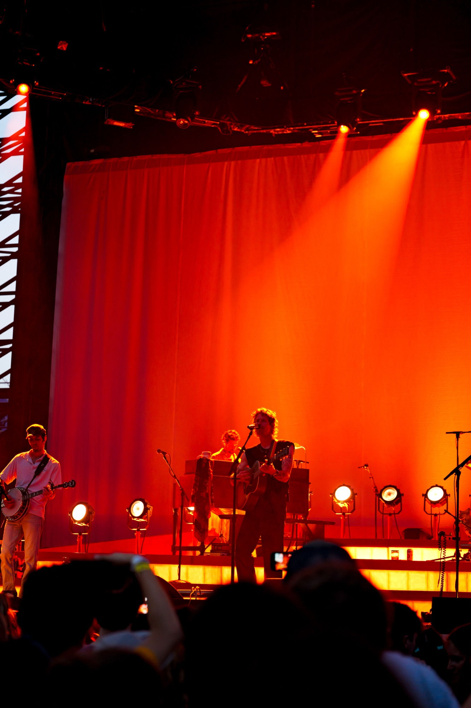
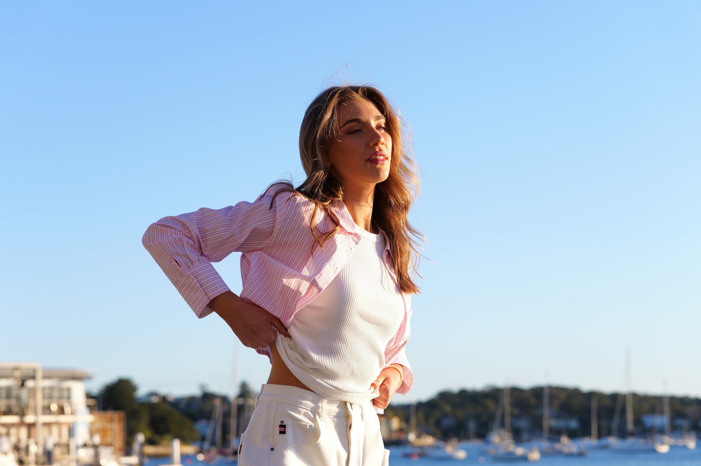

Behind the lens for CAAMP's headline night in Connecticut: a full shoot across film and photography.
Project 06 / 08Centre House Media travelled to Connecticut to shoot CAAMP's headline show: a full creative capture of the band on stage and behind the scenes, delivered across both moving image and stills.
Our role spanned the entire night: from the quiet pre-show moments, to the energy of a packed-out headline crowd, to the intimate detail of performance up close. We worked across multiple cameras and formats to produce a content suite the band could use across long-form video, social cut-downs, press photography and tour archive.
For an act like CAAMP, whose sound is built on warmth, craft and a deep sense of place, the visual language had to match. We leaned into natural light, film-inspired grading, and a documentary sensibility that lets the night speak for itself. The result is a body of work that captures not just the show, but the feeling of being there.



